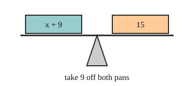

Part of Solving Two-Step Equations. Answer in the chat (1: ..., g: c), add sure or guess after any answer, and say done when finished.
Last time: x + 9 = 15. What is x? You said b) 6, and it is.

You want x alone, but something has been done to it. An equation is a balance, so whatever you do to one side you must do to the other (notes 1). Pick the step that undoes what was done to x: subtract undoes add, divide undoes multiply (notes 2, 3).
Q1. x - 4 = 11. What is x?
15 (sure)
Right: add 4 to both sides, 11 + 4 = 15 (notes 3).
Q2. In your own words: why must you do the same step to both sides?
the two sides are equal, like a balance, so if I only change one side they stop being equal
Right: the balance only stays level if both sides change the same way (notes 1).
Q3. Ali says x / 2 = 8 means x = 4, since you halve the 8. What is wrong?
dividing is undone by multiplying, so x = 8 x 2 = 16, and 16 / 2 = 8 checks (sure)
Right: multiply undoes divide, and your check puts 16 back in (notes 3, 6).
You can now solve a one-step equation.
3x + 5 = 20. What is x?
b (guess)